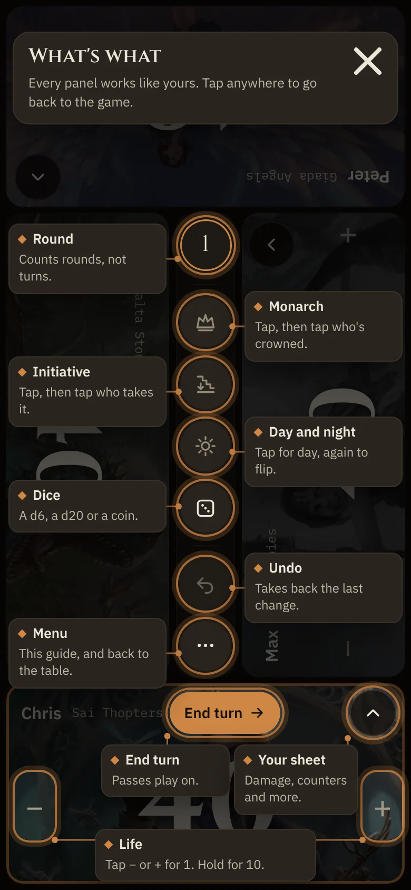
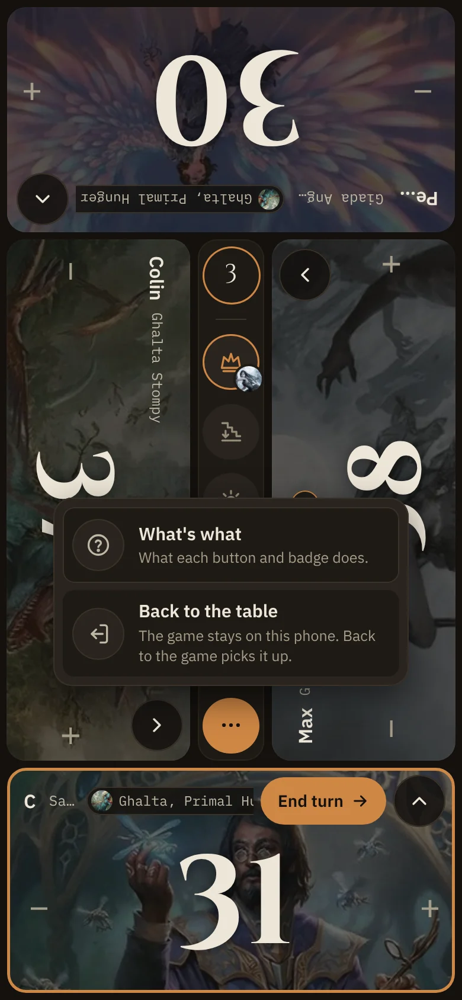

The strip runs down the middle, so its labels take two columns, alternating sides so each has room. Phone lines are shorter than the tablet's (placeholders for /copy-review).

P1 · First open
Header card over the far panel. Round, Initiative, Dice and Menu on the left; Monarch, Day and night and Undo on the right. End turn, Your sheet and Life inside your panel.

P2 · The Menu, mid-game
What's what is the first row, above Back to the table. The Menu keeps its 300px width and grows by one row.